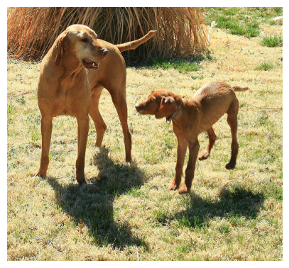

Problema y objetivo
El objetivo del proyecto fue desarrollar un sistema capaz de generar descripciones automáticas de imágenes, integrando visión por computador y procesamiento de lenguaje natural. Para ello se construyó un pipeline reproducible en Google Colab, orientado al entrenamiento, validación y evaluación de un modelo de image captioning.
Problema
Convertir contenido visual en descripciones textuales comprensibles, de manera automática y coherente.
Dataset
Se utilizó Flickr8k, un conjunto de miles de imágenes anotadas con múltiples captions por imagen.
Objetivo
Implementar un modelo funcional de captioning y evaluar su desempeño mediante análisis cualitativo y métricas BLEU.
Metodología
Preprocesamiento
Limpieza de captions, tokenización del texto y adición de tokens startseq y endseq.
Extracción de características
Uso de MobileNetV2 preentrenada para convertir cada imagen en un vector de características visuales.
Modelo secuencial
Implementación de una red LSTM para generar la descripción palabra por palabra a partir de las features visuales.
Entrenamiento robusto
Se incorporó un script maestro anti-desconexiones en Colab, con recuperación de features, tokenizer, historial y mejor modelo.
Inferencia y evaluación
Se compararon estrategias de inferencia Greedy Search y Beam Search, además de métricas BLEU.
Resultados principales
Mejor val_loss
3.6412
Greedy BLEU-1
0.382
Greedy BLEU-2
0.231
Beam BLEU-1
0.433
Beam BLEU-2
0.260
Mejor inferencia
Beam Search
Interpretación
El modelo logró generar captions completas y coherentes desde el punto de vista gramatical. No obstante, persisten limitaciones semánticas en escenas complejas. La estrategia Beam Search obtuvo mejor desempeño que Greedy Search en la evaluación final.
Ejemplos de resultados

Escena con perros
Referencia: A large and small dog interact in a grassy field.
Greedy: a dog is running in the grass
Beam: a black dog is running in the grass
Escena urbana
Referencia: Two people sit on a park bench / Two people in chairs reading.
Greedy: a man in blue and a red shirt is standing on a...
Beam: a man in a blue shirt is sitting on a street

Comparación de métricas
Resultado: Beam Search superó a Greedy Search en BLEU-1 y BLEU-2.
Greedy: BLEU-1 = 0.382 | BLEU-2 = 0.231
Beam: BLEU-1 = 0.433 | BLEU-2 = 0.260

Historial de entrenamiento
La pérdida de entrenamiento y validación mostró una reducción progresiva, evidenciando aprendizaje estable del modelo durante las diferentes versiones del experimento.
Conclusiones
El proyecto cumplió su objetivo al desarrollar un sistema funcional de image captioning con Flickr8k, basado en MobileNetV2 y LSTM. Se consolidó un pipeline reproducible en Colab, se logró entrenamiento estable, se compararon versiones sucesivas del modelo y se evaluó el desempeño mediante análisis cualitativo y métricas BLEU.
Aunque el modelo aún presenta limitaciones en la precisión semántica, especialmente en escenas complejas, los resultados evidencian aprendizaje efectivo y una mejora consistente al usar Beam Search como estrategia de inferencia.
Como trabajo futuro, una mejora natural sería incorporar mecanismos de atención para fortalecer la relación entre las características visuales y la generación textual.